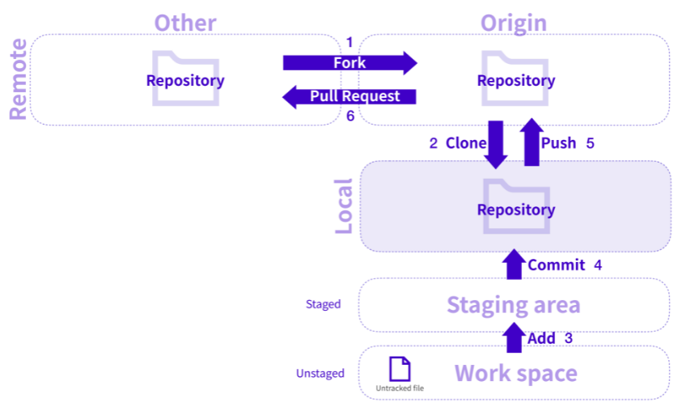

Git Repository를 관리할 수 있는 클라우드 기반 서비스이다.
Git으로 관리되는 파일을 Github의 원격 저장소를 이용해서 백업과 협업할 수 있다.

1. Fork : 다른 사람의 Remote Repository의 코드를 내 Remote Repository로 가져오는 과정을 Fork라고 한다.
2. Clone : 코드를 수정하기 위해서 Remote Repository에서 Local Repository로 가져오는 과정을 Clone이라고 한다.
3. Add : 내 컴퓨터의 작업 공간(Work space)에서 작업에 들어간 파일들을 git의 관리하에 있는 영역으로 올려주는 과정을 Add라고 한다.
git의 관리하에 있는 영역을 Staging area라고 하며 Staging area에 있는 파일들은 Staged 된 파일이라고 말한다.
Staging area가 아닌 상태를 Unstaged 상태라고 하며 Unstaged 상태에 있는 파일을 Untracked file이라고 말한다.
4. Commit : 특정 시점에 생성된 백업 복사본을 스냅샷이라고 하며 스냅샷을 만들어 주는 작업을 Commit이라고 한다.
Commit이란 기능을 통해서 변경 사항에 대한 스냅샷이 만들어지고 이전의 기록들에 대한 추적이 가능하다.
Commit을 하기 위해서는 파일들이 Staging area에 들어와야 한다.
5. Push : 코드 변경이 일어나면 변경된 내용을 Commit을 통해 저장해 준 뒤 Remote Repository에 올려주는 과정을 Push라고 한다.
6. Pull Request : Push가 완료되면 원래의 Remote Repository에 Pull Request를 보내 내가 수정한 코드를 업로드 요청할 수 있다.
Pull Request는 줄여서 PR이라고 많이 쓴다.